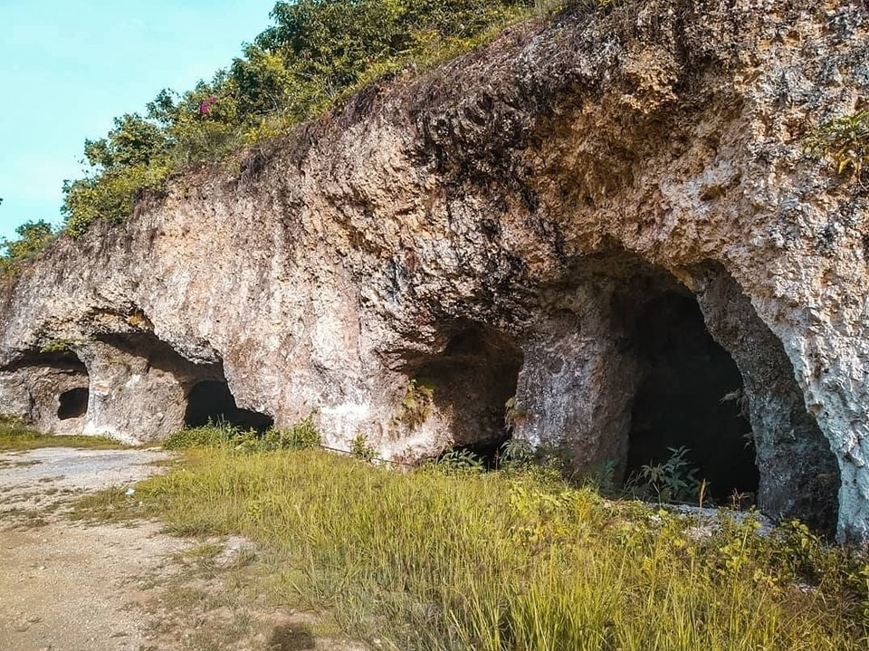

ABOUT THE PLACE
The Lataban Manmade Cave in Liloan, Cebu, is a fascinating historical site that reflects the ingenuity and resilience of the locals. This cave, carved by hand during the Japanese occupation in World War II, served as a hiding spot and shelter for residents seeking refuge from conflict. Nestled in the scenic Lataban area, the cave offers visitors a glimpse into the past while being surrounded by lush greenery. It's a quiet and reflective place, ideal for those interested in history or exploring off-the-beaten-path attractions.